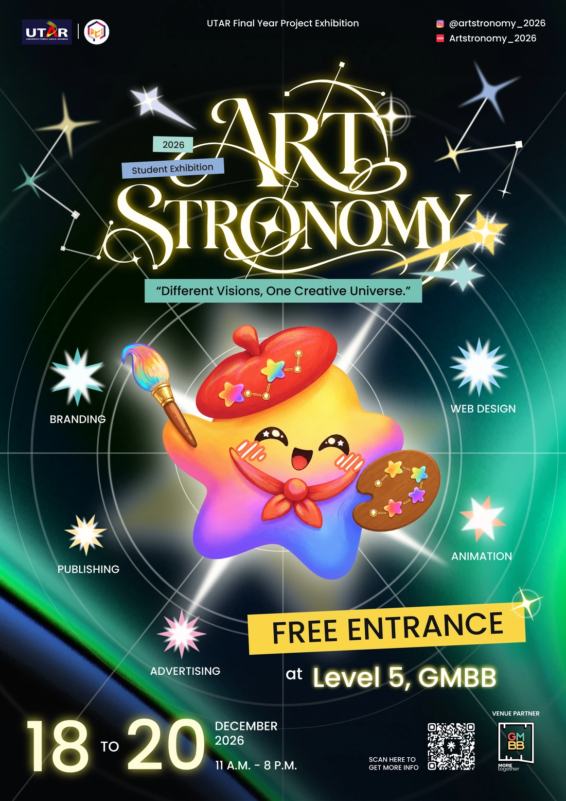

See the print
come to life.
Scan the official poster to reveal its five layers, or scan a supported Hoshi sticker to play its animation. There are 25 stickers to collect, including one mystery sticker.
- Start the camera and allow access.
- Fit one printed design in the frame. A second screen works too.
- Move your phone around the poster to see its five layers. The animation loops while the poster is in view.
Use the back camera on your phone or tablet.